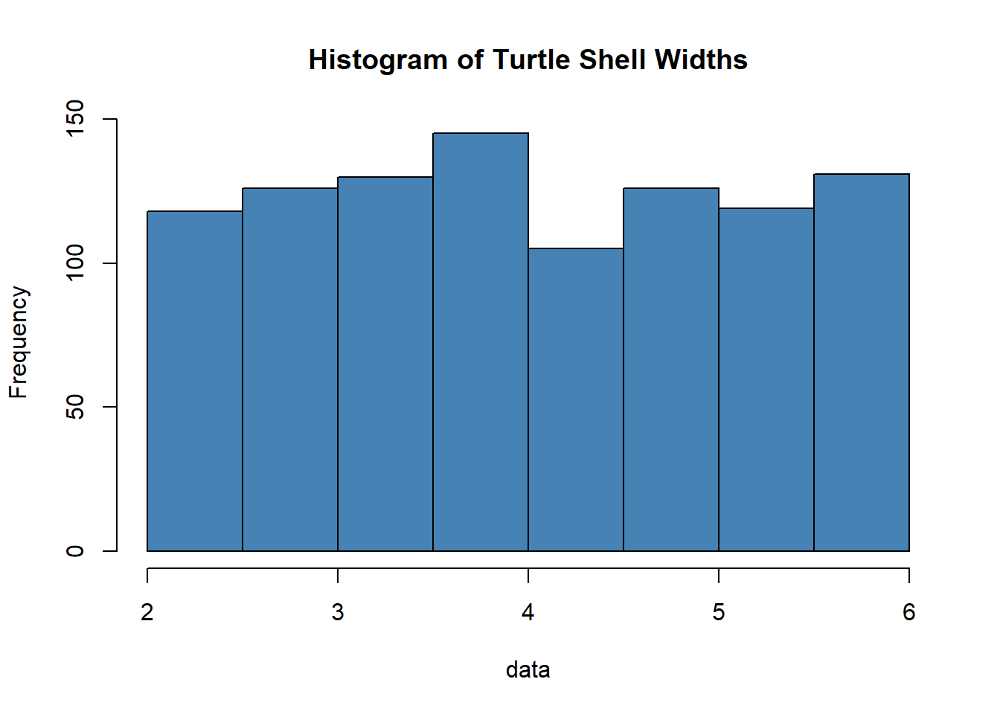
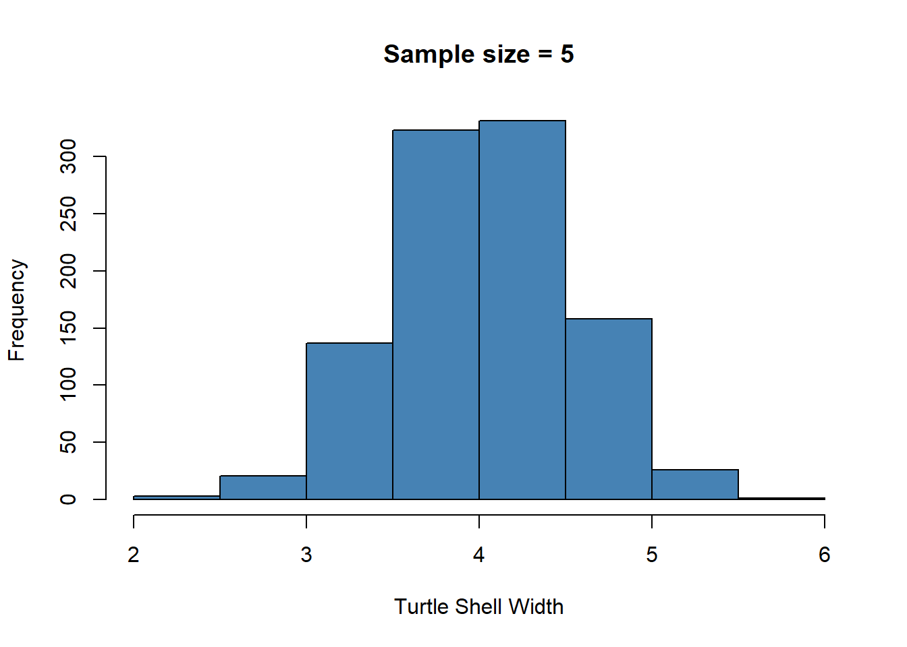
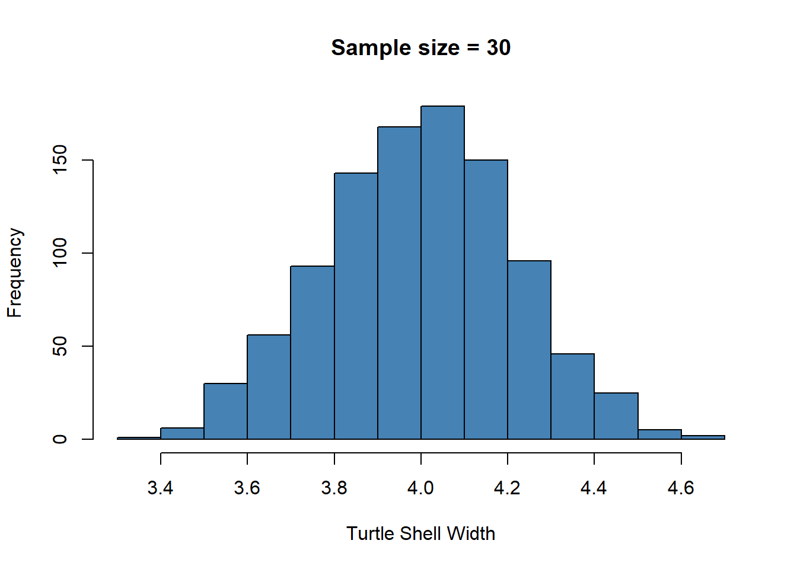
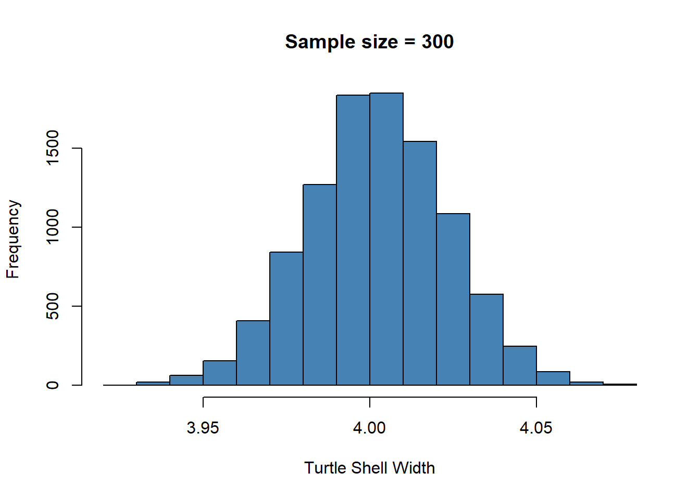

Sampling Distributions and the Central Limit Theorem
April 24 - April 28: Sampling Distributions and the Central Limit Theorem
How to Apply the Central Limit Theorem in R (With Examples)
What is the central limit theorem (CLT)?
The central limit theorem states that/predicts that:
the sampling distribution of a (variable) sample mean is approximately normal if the sample size is large enough, even if the population (variable) is not normally distributed.
CLT states that when you take large samples from the population, the sample means will be normally distributed, even when the population is not normally distributed.
the sampling distribution will have the following properties:
2.1 The mean of the sampling distribution will be equal to the mean of the population (variable) distribution
2.2 The standard deviation of the sampling distribution will be equal to the standard deviation of the population distribution divided by the square root of the sample size:
According to the CLT
The sampling distribution of the mean is approximately normal if the size of the random sample is large enough (large enough means about 30 or more)
The mean of the sampling distribution of the mean is the same as the population mean
The standard deviation of the sampling distribution of the mean (also known as the standard error of the mean) is equal to the population standard deviation divided by the square root of the sample size
If the population that supplied the sample is not normal, the sampling distribution of the mean will be a normally distributed variable so long as the sample size is large enough - for practical purposes, 30 or more
If the population that supplied the sample is normal, then the sampling distribution will be a normally distributed variable for any sample size
Key Notes about the CLT
Note that the population that supplied the samples does not have to be normally distributed for the CLT to hold. The key requirement is that the size of the samples drawn from the population is large enough
Why the normal distribution is important
The normal distribution is famous and important because:
Many natural phenomena are thus distributed - Heights, weight, and IQ scores are all distributed according to this bell shaped curve:
Many statistical models assume that variables are normally distributed
the distributions of sample means are themselves normally distributed!
Assumptions of the CLT
The data must follow the randomization condition. The data [or variable(s)/rows] should be sampled randomly
One sample should not influence the other samples. Samples should be independent of each other.
Sample size should be not more than 10% of the population when sampling is done without replacement
The sample size should be sufficiently large.
Now, how will we figure out how large this size should be? Well, it depends on the population.
When the population is skewed or asymmetric, the sample size should be large. If the population is symmetric, then we can draw small samples as well.
In general, a sample size of 30 is considered sufficient. when the population is symmetric.
Why is the CLT important?
The fact that sample means are normally distributed lets us understand why we can test for differences in population means between groups using t-tests (or Z-tests if we have enough information)
Essentially, this is because we can ask if an observed mean is significantly different to what we’d expect to have seen under the null hypothesis.
Under the null hypothesis, we make a statement about what the mean of a population is equal to. We then observe a sample mean
Since these sample means are normally distributed we can ask about what the probability is of having seen our observed sample mean.
If it’s unlikely to have seen that sample mean, we can reject our null (not accept the alternative, just reject the null).
Example
The following example demonstrates how to apply the CLT in R
Suppose the width of a turtle’s shell follows a uniform distribution with a minimum width of 2 inches and a maximum width of 6 inches.
That is, if we randomly selected a turtle and measured the width of its shell, it’s equally likely to be any width between 2 and 6 inches.
The following code shows how to create a dataset in R that contains the measurements of shell widths for 1,000 turtles, uniformly distributed between 2 and 6 inches:
#make this example reproducibleset.seed(0)#create random variable with sample size of 1000 that is uniformly distributeddata <-runif(n=1000, min=2, max=6)#create histogram to visualize distribution of turtle shell widthshist(data, col='steelblue', main='Histogram of Turtle Shell Widths')

Notice that the distribution of turtle shell widths is not normally distributed at all.
Now, imagine that we take repeated random samples of 5 turtles from this population and measure the sample mean over and over again.
The following code shows how to perform this process in R and create a histogram to visualize the distribution of the sample means:
#create empty vector to hold sample meanssample5 <-c()#take 1,000 random samples of size n=5n =1000for (i in1:n){ sample5[i] =mean(sample(data, 5, replace=TRUE))}#calculate mean and standard deviation of sample meansmean(sample5)
[1] 4.020539
sd(sample5)
[1] 0.5169183
#create histogram to visualize sampling distribution of sample meanshist(sample5, col ='steelblue', xlab='Turtle Shell Width', main='Sample size = 5')

Notice that the sampling distribution of sample means appears normally distributed, even though the distribution that the samples came from was not normally distributed.
Also notice the sample mean and sample standard deviation for this sampling distribution:
Now suppose we increase the sample size that we use from \(n=5\) to \(n=30\) and recreate the histogram of sample means:
#create empty vector to hold sample meanssample30 <-c()#take 1,000 random samples of size n=30n =1000for (i in1:n){ sample30[i] =mean(sample(data, 30, replace=TRUE))}#calculate mean and standard deviation of sample meansmean(sample30)
[1] 3.99713
sd(sample30)
[1] 0.2146805
#create histogram to visualize sampling distribution of sample meanshist(sample30, col ='steelblue', xlab='Turtle Shell Width', main='Sample size = 30')

The sampling distribution is normally distributed once again, but the sample standard deviation is even smaller:
This is because we used a larger sample size (\(n = 30\)) compared to the previous example (\(n = 5\)) so the standard deviation of sample means is even smaller
If we keep using larger and larger sample sizes, we’ll find that the sample standard deviation gets smaller and smaller.
This is one way to illustrate the central limit theorem in practice.
Conclusion
So if the sample size is very large, say 2000, we can expect the sampling distribution’s standard deviation to be rather small, resulting in “thinner” normal curves
Crucially, the mean of the sampling distribution is the same as the population’s mean. But the standard deviation is not.
The sample standard deviation is related to the population standard deviation, though (i.e the population standard deviation divided by the sample size).
The more the original population varies (i.e the higher its standard deviation), the larger the sample size needs to be before we can get “thinner” normal curves.
#create empty vector to hold sample meanssample3000 <-c()#take 10,000 random samples of size n=3000iter =10000for (i in1:iter){ sample3000[i] =mean(sample(data, 3000, replace=TRUE))}#calculate mean and standard deviation of sample meansmean(sample3000)
[1] 4.00218
sd(sample3000)
[1] 0.02115625
#create histogram to visualize sampling distribution of sample meanshist(sample3000, col ='steelblue', xlab='Turtle Shell Width', main='Sample size = 300')

%Session Info%
sessionInfo()
R version 4.2.2 (2022-10-31 ucrt)
Platform: x86_64-w64-mingw32/x64 (64-bit)
Running under: Windows 10 x64 (build 19045)
Matrix products: default
locale:
[1] LC_COLLATE=English_United States.utf8
[2] LC_CTYPE=English_United States.utf8
[3] LC_MONETARY=English_United States.utf8
[4] LC_NUMERIC=C
[5] LC_TIME=English_United States.utf8
attached base packages:
[1] stats graphics grDevices utils datasets methods base
loaded via a namespace (and not attached):
[1] htmlwidgets_1.6.2 compiler_4.2.2 fastmap_1.1.1 cli_3.6.1
[5] tools_4.2.2 htmltools_0.5.5 rstudioapi_0.15.0 yaml_2.3.7
[9] rmarkdown_2.23 knitr_1.43 jsonlite_1.8.4 xfun_0.39
[13] digest_0.6.33 rlang_1.1.1 evaluate_0.21